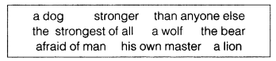

NCERT Solutions
NCERT Solutions for Class 6 English Chapter 2 How the Dog Found Himself a New Master!
Working With the Text (Page21)
Note: We are providing four alternate answers of each questions so don't be confused. Also, "★" refers to our recommended answer out of the four.
1. Why did the dog feel the need for a master?
Answer: The dog was sick and tired of going about alone in search of food. And he did not feel safe. So he decided to have a master.
Answer: The dog felt the need for a master because he was frightened of others stronger than him and was also tired of wandering and looking around for food.
Answer: The dog felt the need for a master as he was sick and tired of wandering about for food. He was also frightened of those who were stronger than him.
Answer: The dog initially was his own master, he was unhappy and was fed up of moving here and there in search of food. He was frightened of those, who were stronger than him. He wanted protection, so, he was looking for a master.
2. Who did he first choose as his master? Why did he leave that master?
Answer: The dog first chose a big, strong and fierce wolf as his master. Once, the dog saw that the wolf was afraid that the bear would eat them up. Since the dog wanted to serve only the strongest, he left the wolf and asked the bear who was stronger than the wolf to be his master.
Answer: The dog first chose a wolf as his master. But he found the wolf afraid of the bear. So he left the company of the wolf.
Answer: At first, he selected the wolf to be his master. He left the wolf because it was afraid of a bear and moved away quickly. The dog understood that the wolf is not the strongest creature on the Earth.
Answer: He chose the wolf as his first master. He left his master as the wolf was scared of the bear, who was stronger than him.
3. Who did he choose next?
Answer: He chose the bear to be his next master.
Answer: Next, the dog chose a bear as his master, because he was stronger than the Wolf.
Answer: The bear was his next master after he left the wolf.
Answer: He chose the bear to be his master.
4. Why did he serve the Lion for a long time?
Answer: He serve the Lion for a long time because he found there was no more powerful and stronger than lion in the forest and so no one dared to touch the dog or offend him in any way. Therefore, the dog lived happily by serving the lion for a long time.
Answer: The dog served the Lion for a long time because he had no complaint against him. Secondly, he felt safe and secure. No other wild animal dared to displease him.
Answer: The dog served the lion for a long time because he was leading a good life with him and had nothing to complain for. The dog was happy as there was no strong beast in the forest than the lion.
Answer: He served the lion for a long time because there was no one stronger than the lion. He was the strongest beast in the forest. He felt safe and secure with the lion as his master and nobody in the forest dared to offend him in any way.
5. Who did he finally choose as his master and why?
Answer: He finally chose man as his master because one day he realised that lion was afraid of man. As he wanted to serve someone who was the most powerful and stronger than anyone on earth, he chose man as his master.
Answer: The dog finally chose a man as his master as even the lion was afraid of man. So the dog was convinced that man was the strongest creature on earth.
Answer: The dog finally selected the man to be his master because he wanted a master, who is stronger than anyone on the Earth, The man was stronger than the lion, who back away quietly after coming to know about human presence.
Answer: Finally he chose humans to be his master because even the lion was scared of the man and the dog wanted someone who was stronger than anyone on the earth.
B. A summary of the story is given below. Fill in the blanks to complete it taking appropriate phrases from the box.
Answer: This is the story of a dog, who used to be his own master. He decided to find a master the strongest of all. First, he found a wolf, but the wolf was afraid of the bear. The dog thought that the bear was stronger than anyone else. After some time the dog met a lion, who seemed the strongest. He stayed with the lion for a long time. One day he realised that the lion was afraid of man. To this day, the dog remains man's best friend.
Working with Language
A. Each word in the box given below indicates a large number of… For example, ‘a herd of cows’ refers to many cows. Complete each of the following phrases with a suitable word from the box.
school, fleet, brood, bundle, bunch, pack, flock, herd
1. A _____ of ships
Answer: a fleet of ships
2. A _____ of flowers
Answer: a bunch of flowers
3. A _____ of chicks
Answer: a brood of chicks
4. A _____ of cattle
Answer: a herd of cattle
5. A _____ of sticks
Answer: a bundle of sticks
6. A _____ of sheep
Answer: a flock of sheep
7. A _____ of fish
Answer: a school of fish
8. A _____ of wolves
Answer: a pack of wolves
B. Make Nouns From the Words Given Below by Adding -ness or - ity. (For some Words We Need to Add Just -ty, or - y.)
1. honest
Answer: honesty
2. kind
Answer: kindness
3. cruel
Answer: cruelty
4. calm
Answer: calmness
5. sad
Answer: sadness
6. active
Answer: activity
7. creative
Answer: creativity
8. sincere
Answer: sincerity
9. cheerful
Answer: cheerfulness
10. bitter
Answer: bitterness
11. sensitive
Answer: sensitivity
12. great
Answer: greatness
D. Read the Following Passage and do the Exercises That Follow. Then Complete the Family Tree of Dogs Given on the Facing Page.
The Dog Family The dog family is one of the 11 families that make up the Carnivores, a large group of intelligent, flesh-eating, backboned animals. In this group are such varied animals as bears, pandas, raccoons, cats, hyenas, and even seal. The dog or canine family has many wild species like wolves, foxes, coyotes, jackals, and wild dogs. The dog is the only domesticated member of the canine family though now and then someone tames a wolf, fox or coyote as a pet. All members of the dog family are descendants of a wolf-like animal that lived about 15 million years ago. From this distant ancestor, the true dogs gradually developed. But nobody knows the exact ancestor of the modern domestic dog. Several wild dogs look and behave like domestic dogs. The dingo or wild dog of Australia is one of these. It is possible that the dingo was a tamed dog brought to Australia long ago which then ran wild. Dogs were the first animals tamed by humans - perhaps 20,000 years ago. Tamed dogs were brought from Asia to the New World 5,000 or more years ago. Dogs were first used for hunting.
1. Find the opposites of these words in the text above.
(i) ancestor
Answer: descendant
(ii) wild t _ m _
Answer: tame
(iii) ancient
Answer: modern
(iv) near d _ _ _ _ _ t
Answer: distant
(v) suddenly gr _ _ _ _ _ _ _
Answer: gradually
2. Complete the following sentences.
1. The dingo is _____.
Answer: a wild animal
2. Dogs were the ______ animals tamed by humans. The other animals tamed by humans are ____ (Think and name some other such animals.)
Answer: first; donkey, horses, etc
3. The New World refers to _____. Dogs were brought there from _____.
Answer: Australia; Asia
Working with Poem
1. List out the action words in the poem.
dive, dip, snaps, ——————, ——————, ———————, ——————, ————— Find out the meanings of these words.
Answer: dive, dip, snaps, soars, rides, climbs, pulls, falls, run, blows, goes, flaps.
2. Read these lines from the poem:
Then soars like a ship With only a sail The movement of the tailless kite is compared to a ship with a sail. This is called a simile. Can you suggest what or who the following actions may be compared to?
1. He runs like ________
Answer: snail
2. He eats like ________
Answer: horse
3. She sings like ________
Answer: canary
4. It shines like ________
Answer: diamond
5. It flies like ________
Answer: bird